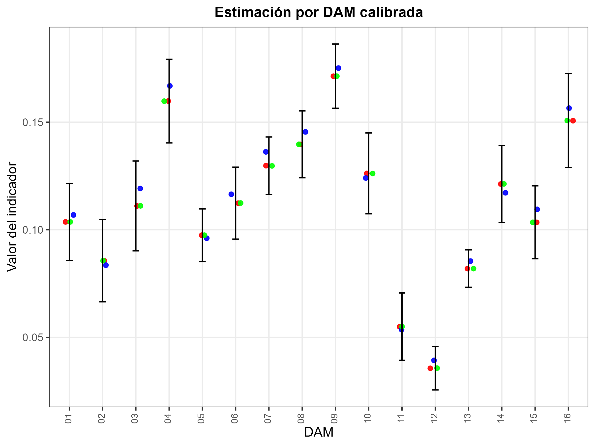

Curso de Benchmarking para Modelos Bayesianos de Estimación en Áreas Pequeñas con Métodos MCMC
Benchmarking para el Modelo de unidad de la pobreza
División de Estadísticas - CEPAL
Introducción
El proceso de benchmarking de cadenas MCMC es crucial en SAE, porque:
Garantiza que las estimaciones desagregadas sean coherentes con los niveles de agregación donde la encuesta es representativa, por ejemplo, divisiones administrativas mayores o nivel nacional.
Debe tenerse presente que el benchmarking es un procedimiento de ajuste estético: no mejora la calidad intrínseca del estimador, pero sí asegura consistencia y comparabilidad.
Estimación bajo MCMC
El proceso de predicción de la pobreza en dominios no observados se realiza mediante MCMC, combinando la información muestral y la estructura del modelo de unidad.
Esta aproximación permite:
- Propagar la incertidumbre de los parámetros.
- Obtener predicciones consistentes a nivel de unidad y dominio.
- Propagar la incertidumbre de los parámetros.
Proceso de estimación en R (I)
Librerías principales utilizadas:
Encuesta de hogares
Los datos empleados en esta ocasión corresponden a la ultima encuesta de hogares, la cual ha sido estandarizada por CEPAL y se encuentra disponible en BADEHOG
| dam | dam2 | upm | estrato | ingreso | lp | li | pobreza | logingreso | area | sexo | anoest | edad | etnia | fep | yk |
|---|---|---|---|---|---|---|---|---|---|---|---|---|---|---|---|
| 01 | 01101 | 1100100001 | 11001 | 250000 | 113958 | 51309 | 0 | 12.4292 | 1 | 2 | 3 | 4 | 1 | 39 | 0 |
| 01 | 01101 | 1100100001 | 11001 | 211091 | 113958 | 51309 | 0 | 12.2600 | 1 | 2 | 3 | 2 | 3 | 39 | 0 |
| 01 | 01101 | 1100100001 | 11001 | 296750 | 113958 | 51309 | 0 | 12.6006 | 1 | 1 | 3 | 2 | 3 | 39 | 0 |
| 01 | 01101 | 1100100001 | 11001 | 296750 | 113958 | 51309 | 0 | 12.6006 | 1 | 1 | 3 | 2 | 3 | 39 | 0 |
| 01 | 01101 | 1100100001 | 11001 | 113889 | 113958 | 51309 | 1 | 11.6430 | 1 | 1 | 4 | 2 | 3 | 39 | 1 |
Lectura de covariables
| dam2 | area0 | area1 | etnia2 | sexo2 | edad2 | edad3 | edad4 | edad5 | anoest2 | anoest3 | anoest4 | anoest99 | etnia1 | piso_tierra | material_paredes | material_techo | rezago_escolar | alfabeta | tasa_desocupacion | pollution_CO | vegetation_NDVI | Elevation | temperature_ECMWF | temperature_2metros | total_precipitation | precipitation | population_density | luces_nocturnas | cubrimiento_cultivo | cubrimiento_urbano | modificacion_humana | accesibilidad_hospitales | accesibilidad_hosp_caminado |
|---|---|---|---|---|---|---|---|---|---|---|---|---|---|---|---|---|---|---|---|---|---|---|---|---|---|---|---|---|---|---|---|---|---|
| 01101 | 0.0126 | 0.9874 | 0.0016 | 0.5044 | 0.2374 | 0.2338 | 0.2242 | 0.0926 | 0.1360 | 0.4547 | 0.2711 | 0.0245 | 0.1709 | 0.0051 | 0.2133 | 0.5059 | 0.3940 | 0.0285 | 0.0703 | 0.0229 | -1.7713 | -0.0492 | 2.0871 | 1.3892 | 0e+00 | 0.0057 | -0.3101 | -0.4713 | -0.9633 | -0.3591 | -0.6911 | 0.0238 | 0.0469 |
| 01107 | 0.0230 | 0.9770 | 0.0011 | 0.4998 | 0.2723 | 0.2157 | 0.1863 | 0.0426 | 0.1856 | 0.5305 | 0.0978 | 0.0358 | 0.2949 | 0.0372 | 0.2447 | 0.5403 | 0.1832 | 0.0528 | 0.0851 | 0.0229 | -1.7300 | 0.2182 | 2.3984 | 1.6136 | 0e+00 | 0.0078 | -0.2644 | -0.1883 | -0.9633 | -0.3157 | -0.4150 | -0.2180 | -0.0922 |
| 01401 | 0.3575 | 0.6425 | 0.0004 | 0.4280 | 0.2539 | 0.2415 | 0.2023 | 0.0719 | 0.1781 | 0.5285 | 0.1377 | 0.0280 | 0.4207 | 0.0193 | 0.6109 | 0.8826 | 0.2323 | 0.0513 | 0.0762 | 0.0209 | -1.7393 | 0.9481 | 1.8649 | 1.5590 | 0e+00 | 0.0068 | -0.3569 | -0.5357 | -0.9607 | -0.3883 | -1.3414 | 0.4371 | 0.1599 |
| 01402 | 1.0000 | 0.0000 | 0.0000 | 0.4744 | 0.2064 | 0.1792 | 0.2376 | 0.1568 | 0.2536 | 0.4256 | 0.0752 | 0.0720 | 0.8568 | 0.0194 | 0.6728 | 0.9187 | 0.1814 | 0.1854 | 0.0380 | 0.0190 | -1.7546 | 2.2707 | 1.1709 | 0.6441 | 0e+00 | 0.0093 | -0.3582 | -0.5581 | -0.9618 | -0.3905 | -1.4837 | 0.9270 | 0.2968 |
| 01403 | 1.0000 | 0.0000 | 0.0006 | 0.4242 | 0.2685 | 0.2378 | 0.2269 | 0.1209 | 0.2529 | 0.3686 | 0.1539 | 0.0799 | 0.8113 | 0.0864 | 0.9684 | 0.9782 | 0.2796 | 0.1937 | 0.0494 | 0.0153 | -1.5885 | 4.3891 | -1.1246 | -2.0702 | 1e-04 | 0.0228 | -0.3581 | -0.5595 | -0.9362 | -0.3875 | -1.4958 | 0.1454 | -0.0117 |
Benchmarking por iteración de la cadena MCMC
Para estimar correctamente la incertidumbre posterior y garantizar coherencia con los totales directos de pobreza, el cálculo de los factores de calibración se repite para cada realización (l) de la cadena MCMC.
De esta forma obtenemos una familia de factores
\[ \{g_k^{(l)} \}_{l=1}^L \]
y, a partir de ellos, una familia de estimadores calibrados de la tasa de pobreza:
\[ \{\widehat{P}_d^{(l)\text{cal}}\}_{l=1}^L. \]
Notación
- \(l = 1,\ldots,L\): iteración de la cadena MCMC
- \(\boldsymbol{P}^{(l)}\): parámetros muestreados en la iteración \(l\)
- \(\hat{p}_k^{(l)}\): tasa de pobreza predicha para el post-estrato \(k\) dada \(\boldsymbol{P}^{(l)}\)
- \(n_k\): tamaño poblacional del post-estrato
- \(\mathbf{x}_k\): vector de calibración (dummies por DAM) del post-estrato
- \(\mathbf{t}_X\): totales directos de pobreza a nivel nacional o por DAM
Proceso para cada iteración \(l\) (I)
1. Predicción condicional (modelo)
\[ \hat{p}_k^{(l)} = E\big(P_k \mid \boldsymbol{\theta}^{(l)} \big) \]
donde \(P_k\) es la tasa de pobreza del post-estrato.
2. Estimación directa de la pobreza a nivel de dominio
\[ \widehat{\mathbf{t}}_X^{DIR} \]
Proceso para cada iteración \(l\) (II)
3. Calibración — resolver para \(g_k^{(l)}\)
Buscamos valores positivos \(g_k^{(l)}\) tales que:
\[ \sum_{k} g_k^{(l)} n_k \mathbf{x}_k \equiv \widehat{\mathbf{t}}_X^{DIR} \]
donde \(\mathbf{t}_X\) incluye:
- totales poblacionales por DAM
- totales de personas pobres por DAM o a nivel nacional
En la práctica, calib() obtiene:
\[ g_k^{(l)} = h\left(\lambda^{(l)\top}\mathbf{x}_k \right), \]
donde \(h(\cdot)\) depende del método (logit recomendado para tasas), y \(\lambda^{(l)}\) es el vector de Lagrange de la iteración.
Proceso para cada iteración \(l\) (III)
4. Estimador calibrado de la tasa de pobreza por dominio (d)
\[ \widehat{P}_d^{(l)\text{cal}} = \frac{1}{N_d} \sum_{k\in d} g_k^{(l)} n_k \hat{p}_k^{(l)}. \]
donde (N_d = _{kd} n_k).
Así se obtiene la tasa ajustada respetando los totales directos.
Proceso para cada iteración \(l\) (IV)
5. Repetir para \(l=1,\dots,L\)
Esto genera la muestra posterior calibrada:
\[ \{\widehat{P}_d^{(l),\text{cal}}\}_{l=1}^L. \]
6. Obtención del estimador final e intervalos creíbles
\[ \widehat{P}_d^{\text{cal}} = \frac{1}{L}\sum_{l=1}^L \widehat{P}_d^{(l),\text{cal}} \]
\[ IC_{1-\alpha}(P_d) = \text{quantiles}\left({\widehat{P}_d^{(l),\text{cal}}}\right). \]
Observaciones prácticas y requisitos (I)
Positividad: Debe cumplirse \(g_k^{(l)} > 0\). Si no ocurre, conviene usar método
"logit"o descartar la iteración (muy raro).Propagación de incertidumbre: La incertidumbre proviene tanto del modelo como de la calibración. Esto produce intervalos más realistas y coherentes con los totales observados.
Observaciones prácticas y requisitos (II)
Costo computacional: Calibrar en cada iteración puede ser costoso. Se recomienda reducir el número de post-estratos o usar agregaciones intermedias.
Diagnósticos: Revisar la distribución de \(g_k^{(l)}\):
- histogramas
- percentiles
- valores extremos
- verificar que se cumplen exactamente los totales fijados:
\[ \sum_k g_k^{(l)} n_k \mathbf{x}_k \approx \mathbf{t}_X. \]
Proceso de estimación y predicción
Obtener el modelo es solo un paso más, ahora se debe realizar la predicción en el censo, el cual a sido previamente estandarizado y homologado con la encuesta.
| dam | dam2 | area | etnia | sexo | edad | anoest | n | area0 | area1 | etnia2 | sexo2 | edad2 | edad3 | edad4 | edad5 | anoest2 | anoest3 | anoest4 | anoest99 | etnia1 | piso_tierra | material_paredes | material_techo | rezago_escolar | alfabeta | tasa_desocupacion | pollution_CO | vegetation_NDVI | Elevation | temperature_ECMWF | temperature_2metros | total_precipitation | precipitation | population_density | luces_nocturnas | cubrimiento_cultivo | cubrimiento_urbano | modificacion_humana | accesibilidad_hospitales | accesibilidad_hosp_caminado |
|---|---|---|---|---|---|---|---|---|---|---|---|---|---|---|---|---|---|---|---|---|---|---|---|---|---|---|---|---|---|---|---|---|---|---|---|---|---|---|---|---|
| 13 | 13201 | 1 | 3 | 2 | 4 | 3 | 46766 | 0.0000 | 1.0000 | 0.0001 | 0.5157 | 0.2513 | 0.2042 | 0.2518 | 0.0765 | 0.1496 | 0.4951 | 0.2124 | 0.0280 | 0.1096 | 4e-04 | 0.0736 | 0.6202 | 0.3179 | 0.0385 | 0.0688 | 0.0202 | -0.8190 | 0.1107 | 0.1069 | 0.1652 | 0e+00 | 0.0689 | 5.1790 | 2.6378 | -0.3121 | 1.8661 | 1.7482 | -0.4728 | -0.1807 |
| 13 | 13119 | 1 | 3 | 2 | 4 | 3 | 45879 | 0.0066 | 0.9934 | 0.0003 | 0.5192 | 0.2480 | 0.1981 | 0.2666 | 0.0940 | 0.1333 | 0.4843 | 0.2623 | 0.0209 | 0.0989 | 6e-04 | 0.0728 | 0.5547 | 0.3691 | 0.0295 | 0.0673 | 0.0208 | -0.6038 | -0.2372 | 0.7445 | 0.8473 | 0e+00 | 0.0320 | 4.8237 | 2.1005 | 0.5322 | 1.1706 | 1.6470 | -0.4610 | -0.1696 |
| 13 | 13101 | 1 | 3 | 1 | 3 | 4 | 40861 | 0.0000 | 1.0000 | 0.0013 | 0.4890 | 0.3123 | 0.3170 | 0.1746 | 0.0742 | 0.0780 | 0.3337 | 0.4832 | 0.0279 | 0.0798 | 3e-04 | 0.2288 | 0.3063 | 0.6032 | 0.0201 | 0.0581 | 0.0220 | -1.4233 | -0.1928 | 0.4775 | 0.6273 | 1e-04 | 0.0752 | 2.4286 | 2.9204 | -0.9204 | 3.7382 | 2.2047 | -0.4918 | -0.1880 |
| 13 | 13201 | 1 | 3 | 1 | 4 | 3 | 39566 | 0.0000 | 1.0000 | 0.0001 | 0.5157 | 0.2513 | 0.2042 | 0.2518 | 0.0765 | 0.1496 | 0.4951 | 0.2124 | 0.0280 | 0.1096 | 4e-04 | 0.0736 | 0.6202 | 0.3179 | 0.0385 | 0.0688 | 0.0202 | -0.8190 | 0.1107 | 0.1069 | 0.1652 | 0e+00 | 0.0689 | 5.1790 | 2.6378 | -0.3121 | 1.8661 | 1.7482 | -0.4728 | -0.1807 |
| 13 | 13201 | 1 | 3 | 1 | 2 | 3 | 38791 | 0.0000 | 1.0000 | 0.0001 | 0.5157 | 0.2513 | 0.2042 | 0.2518 | 0.0765 | 0.1496 | 0.4951 | 0.2124 | 0.0280 | 0.1096 | 4e-04 | 0.0736 | 0.6202 | 0.3179 | 0.0385 | 0.0688 | 0.0202 | -0.8190 | 0.1107 | 0.1069 | 0.1652 | 0e+00 | 0.0689 | 5.1790 | 2.6378 | -0.3121 | 1.8661 | 1.7482 | -0.4728 | -0.1807 |
Note que la información del censo esta agregada.
Distribución posterior.
Para obtener una distribución posterior de cada observación se hace uso de la función posterior_epred de la siguiente forma.
Proceso de estimación en R (I)
En cada iteración \(l\) de la cadena MCMC:
- Sustituir \(\hat{y}_k^{(l)}\) en la tabla de post-estratificación.
- Construir la matriz de calibración \(\mathbf{X}_k\).
Proceso de estimación en R (II)
Código en R
# 2. Matriz de calibración
Xk_num <- temp_post %>% select(all_of(names_cov)) %>%
fastDummies::dummy_cols(select_columns = names_cov,
remove_selected_columns = TRUE) %>%
mutate_at(vars(matches("\\d$")) ,~.*temp_post$yk) %>%
as.matrix()
Xk_den <- temp_post %>% select(all_of(names_cov)) %>%
fastDummies::dummy_cols(select_columns = names_cov,
remove_selected_columns = TRUE) %>%
as.matrix()
colnames(Xk_num) <- paste0("num_", colnames(Xk_num))
colnames(Xk_den) <- paste0("den_", colnames(Xk_den))
Xk <- cbind(Xk_num, Xk_den)Proceso de estimación en R (III)
- Calcular los totales de la encuesta \(\mathbf{t}_X\).
Código en R
# 3. Totales de la encuesta
encuesta_temp <- encuesta_mrp %>% select(all_of(names_cov)) %>%
fastDummies::dummy_cols(select_columns = names_cov,
remove_selected_columns = TRUE)
num_total <- encuesta_temp %>%
mutate_at(vars(matches("\\d$"))
,~.*encuesta_mrp$yk*encuesta_mrp$fep) %>%
colSums()
den_total <- encuesta_temp %>%
mutate_at(vars(matches("\\d$")) ,~.*encuesta_mrp$fep) %>%
colSums()
names(num_total) <- paste0("num_", names(num_total))
names(den_total) <- paste0("den_", names(den_total))
Total_Xk <- c(num_total, den_total)
Xk <- Xk[,names(Total_Xk)]
Total_Xknum_dam_01 num_dam_02 num_dam_03 num_dam_04 num_dam_05 num_dam_06 num_dam_07
35953 50202 31638 123869 180948 104476 135876
num_dam_08 num_dam_09 num_dam_10 num_dam_11 num_dam_12 num_dam_13 num_dam_14
227022 171349 111416 5783 5410 592171 45043
num_dam_15 num_dam_16 den_dam_01 den_dam_02 den_dam_03 den_dam_04 den_dam_05
16662 69454 346917 586198 284814 775198 1856498
den_dam_06 den_dam_07 den_dam_08 den_dam_09 den_dam_10 den_dam_11 den_dam_12
929632 1047293 1625099 999730 882790 105156 151681
den_dam_13 den_dam_14 den_dam_15 den_dam_16
7223236 371358 161015 460799 Proceso de estimación en R (IV)
- Resolver el sistema de calibración para obtener \(g_k^{(l)}\).
Diagnóstico
Proceso de estimación en R (V)
Código en R
# Totales ajustados
hat_tx <- Xk %>% data.frame() %>%
mutate_at(vars(matches("\\d$")), ~ . * temp_post$n * gk_calib) %>%
colSums()
round(Total_Xk - hat_tx, 4)num_dam_01 num_dam_02 num_dam_03 num_dam_04 num_dam_05 num_dam_06 num_dam_07
-0.0001 0.0000 0.0000 -0.0001 0.0000 0.0000 0.0000
num_dam_08 num_dam_09 num_dam_10 num_dam_11 num_dam_12 num_dam_13 num_dam_14
-0.0001 0.0000 -0.0004 0.0000 0.0007 0.0000 0.0000
num_dam_15 num_dam_16 den_dam_01 den_dam_02 den_dam_03 den_dam_04 den_dam_05
0.0132 0.0000 -0.0008 0.0000 -0.0002 -0.0009 0.0000
den_dam_06 den_dam_07 den_dam_08 den_dam_09 den_dam_10 den_dam_11 den_dam_12
0.0000 0.0000 -0.0006 0.0000 -0.0015 0.0000 0.0110
den_dam_13 den_dam_14 den_dam_15 den_dam_16
0.0000 0.0000 0.0773 0.0000 Proceso de estimación en R (Función benchmarking)
| dam | dam2 | area | etnia | sexo | edad | anoest | n | yk | yk_bench | n2 |
|---|---|---|---|---|---|---|---|---|---|---|
| 01 | 01101 | 0 | 1 | 1 | 1 | 1 | 10 | 0.1433 | 0.1363 | 9.5088 |
| 01 | 01101 | 0 | 1 | 1 | 1 | 2 | 24 | 0.1433 | 0.1363 | 22.8211 |
| 01 | 01101 | 0 | 1 | 1 | 1 | 3 | 3 | 0.1433 | 0.1363 | 2.8526 |
| 01 | 01101 | 0 | 1 | 1 | 1 | 98 | 16 | 0.1433 | 0.1363 | 15.2141 |
| 01 | 01101 | 0 | 1 | 1 | 1 | 99 | 1 | 0.1433 | 0.1363 | 0.9509 |
Proceso de estimación en R para la MCMC
Código en R
poststrat_df_iter2 <- map(1:500,
~{
temp_post <- poststrat_df %>%
mutate(yk = epred_mat[.x,]) %>%
select(dam:n, yk)
poststrat_df_iter <- benchmarking_pobreza(
poststrat_df = temp_post %>% data.frame(),
encuesta_sta = encuesta_mrp %>% mutate(yk = pobreza),
names_cov = "dam",
metodo = "logit",
show_plot = FALSE
)
poststrat_df_iter
}
)
saveRDS(poststrat_df_iter2, "../Recursos/Modelo_unidad/poststrat_df_iter_pobreza.rds")Estimación nacional
- SIN benchmarking (usa n)
CON benchmarking (usa n2)
Resultado de la estimación nacional
| estimate | sd | lci | uci | Metodo |
|---|---|---|---|---|
| 0.1071 | 0e+00 | 0.1071 | 0.1071 | Con benchmarking |
| 0.1099 | 8e-04 | 0.1084 | 0.1115 | Sin benchmarking |
Estimación por DAM SIN benchmarking
Estimación por DAM CON benchmarking
Resultado de la estimación DAM
| dam | estimate_con | sd_con | estimate_sin | sd_sin |
|---|---|---|---|---|
| 01 | 0.1036 | 0 | 0.1069 | 0.0031 |
| 02 | 0.0856 | 0 | 0.0835 | 0.0029 |
| 03 | 0.1111 | 0 | 0.1192 | 0.0040 |
| 04 | 0.1598 | 0 | 0.1668 | 0.0039 |
| 05 | 0.0975 | 0 | 0.0960 | 0.0021 |
| 06 | 0.1124 | 0 | 0.1165 | 0.0027 |
| 07 | 0.1297 | 0 | 0.1362 | 0.0030 |
| 08 | 0.1397 | 0 | 0.1455 | 0.0025 |
| 09 | 0.1714 | 0 | 0.1751 | 0.0032 |
| 10 | 0.1262 | 0 | 0.1241 | 0.0032 |
| 11 | 0.0550 | 0 | 0.0536 | 0.0033 |
| 12 | 0.0357 | 0 | 0.0393 | 0.0025 |
| 13 | 0.0820 | 0 | 0.0855 | 0.0014 |
| 14 | 0.1213 | 0 | 0.1172 | 0.0031 |
| 15 | 0.1035 | 0 | 0.1095 | 0.0038 |
| 16 | 0.1507 | 0 | 0.1565 | 0.0043 |
Resultado de la estimación DAM

Estimaciones desagregadas por DAM – área
Código en R
theta_modelo_sin_dam_area <- calc_theta(
result_list = poststrat_df_iter2,
levels = c("dam", "area"),
ci_level = 0.95,
var_n = "n"
)$estimates %>%
transmute(dam, area, estimate_sin = estimate, sd_sin = sd)
saveRDS(theta_modelo_sin_dam_area,
"../Recursos/Modelo_unidad/06.theta_modelo_pobreza_sin_dam_area.rds")Estimaciones desagregadas por DAM – área
Código en R
theta_modelo_con_dam_area <- calc_theta(
result_list = poststrat_df_iter2,
levels = c("dam", "area"),
ci_level = 0.95,
var_n = "n2"
)$estimates %>%
transmute(dam, area, estimate_con = estimate, sd_con = sd)
saveRDS(theta_modelo_con_dam_area,
"../Recursos/Modelo_unidad/07.theta_modelo_pobreza_con_dam_area.rds")Estimaciones desagregadas por DAM – área
| dam | area | estimate_sin | sd_sin | estimate_con | sd_con |
|---|---|---|---|---|---|
| 01 | 0 | 0.1029 | 0.0086 | 0.1006 | 0.0074 |
| 01 | 1 | 0.1071 | 0.0030 | 0.1038 | 0.0005 |
| 02 | 0 | 0.0520 | 0.0040 | 0.0534 | 0.0035 |
| 02 | 1 | 0.0855 | 0.0030 | 0.0876 | 0.0002 |
| 03 | 0 | 0.1164 | 0.0065 | 0.1067 | 0.0056 |
| 03 | 1 | 0.1195 | 0.0041 | 0.1115 | 0.0006 |
| 04 | 0 | 0.1476 | 0.0042 | 0.1404 | 0.0031 |
| 04 | 1 | 0.1713 | 0.0042 | 0.1644 | 0.0008 |
| 05 | 0 | 0.1041 | 0.0038 | 0.1066 | 0.0043 |
| 05 | 1 | 0.0952 | 0.0022 | 0.0966 | 0.0004 |
¡Gracias!